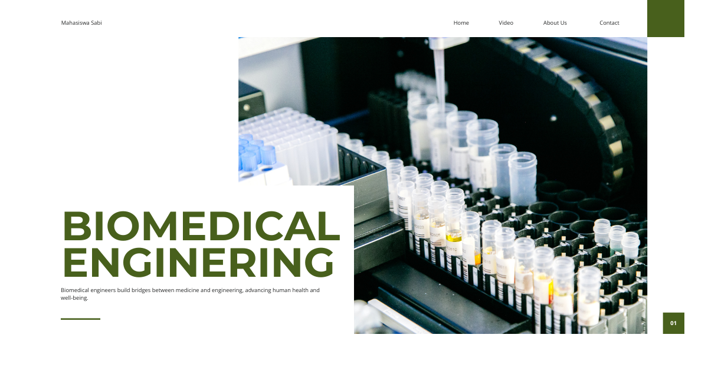

Skripsi
Skripsi adalah karya ilmiah berbasis penelitian yang disusun oleh mahasiswa sebagai salah satu persyaratan untuk menyelesaikan pendidikan sarjana. Dalam Teknik Biomedik, skripsi menjadi kesempatan bagi mahasiswa untuk menerapkan ilmu rekayasa, teknologi, biologi, dan kedokteran dalam mengidentifikasi serta menyelesaikan permasalahan di bidang kesehatan. Penelitian dapat berupa pengembangan perangkat medis, perancangan sistem pemantauan kesehatan, analisis data biologis, maupun pengujian teknologi yang berpotensi meningkatkan kualitas pelayanan kesehatan.
Mahasiswa mempelajari proses penelitian mulai dari identifikasi masalah, kajian literatur, perumusan tujuan, pemilihan metode, pengumpulan data, pengujian, hingga analisis dan penyusunan laporan ilmiah. Topik penelitian dapat mencakup instrumentasi medis, pengolahan sinyal ECG dan EEG, pencitraan medis, biomaterial, biomekanika, biosensor, kecerdasan buatan untuk diagnosis, serta pengembangan alat bantu rehabilitasi. Mahasiswa juga dituntut memahami validasi hasil, keselamatan perangkat, etika penelitian, dan kemampuan mempertanggungjawabkan hasil penelitian melalui sidang skripsi.
Dalam Teknik Biomedik, skripsi berperan sebagai sarana untuk mengintegrasikan berbagai kompetensi yang telah diperoleh selama perkuliahan ke dalam sebuah penelitian nyata. Mahasiswa ditantang menggabungkan prinsip teknik elektro, mekanika, informatika, biologi, dan ilmu kesehatan untuk menghasilkan solusi yang terukur. Skripsi juga melatih kemandirian, pemikiran kritis, kreativitas, serta kemampuan menyelesaikan masalah secara sistematis sehingga mahasiswa lebih siap menghadapi tantangan penelitian maupun pekerjaan profesional.
Penelitian skripsi dapat memberikan kontribusi terhadap pengembangan teknologi yang membantu masyarakat memperoleh layanan kesehatan lebih baik, seperti alat pemantauan kondisi pasien, sistem deteksi dini penyakit, perangkat rehabilitasi, dan instrumen diagnostik. Dalam dunia riset, skripsi menjadi dasar untuk mengembangkan penelitian lanjutan, menghasilkan publikasi ilmiah, serta menyempurnakan teknologi biomedis yang sudah ada. Di dunia kerja, pengalaman menyelesaikan penelitian membekali mahasiswa dengan kemampuan analisis data, pemecahan masalah, pengujian produk, dokumentasi teknis, dan pengembangan inovasi yang dibutuhkan oleh rumah sakit, laboratorium, industri alat kesehatan, maupun perusahaan teknologi medis.
Topik penelitian Teknik Biomedik semakin berkembang mengikuti kemajuan kecerdasan buatan (AI), Internet of Medical Things (IoMT), wearable devices, biosensor pintar, robotika medis, dan teknologi kesehatan digital. Penelitian mengenai deteksi penyakit berbasis AI, pemantauan tanda vital secara real-time, analisis sinyal biologis, serta pengembangan perangkat kesehatan portabel menjadi bidang yang semakin menarik. Selain itu, pengembangan teknologi yang terjangkau, keamanan data pasien, biokompatibilitas material, dan validasi klinis juga menjadi perhatian penting. Tren ini mendorong mahasiswa menghasilkan penelitian yang tidak hanya inovatif secara teknologi, tetapi juga aman, akurat, dan berpotensi diterapkan dalam kebutuhan pelayanan kesehatan.
Pengalaman penelitian skripsi membuka peluang karier sebagai biomedical engineer, research and development engineer, clinical engineer, medical device engineer, analis data kesehatan, peneliti biomedis, atau spesialis pengujian dan pengembangan alat kesehatan. Kemampuan penelitian juga menjadi bekal untuk melanjutkan pendidikan ke jenjang magister maupun doktoral. Dengan pengalaman merancang, menguji, dan mengevaluasi solusi berbasis teknologi, lulusan Teknik Biomedik dapat berkontribusi dalam menciptakan inovasi yang mendukung kemajuan ilmu pengetahuan dan meningkatkan kualitas pelayanan kesehatan.